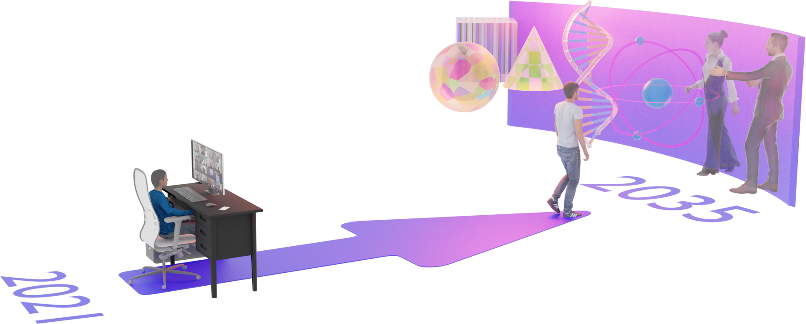

Narrate section
Prerequisites and general information¶
You have reached the website for the Computational Light Course.
This page is the starting point for the Computational Light course. Readers can follow the course material found on these pages to learn more about the field of Computational Light. I encourage readers to carefully read this page to decide if they want to continue with the course.
Brief course description¶
Informative
Computational Light is a term that brings the concepts in computational methods with the characteristics of light. So more specifically, wherever we can program the qualities of light, such as intensity or direction, this will bring us into the topics of Computational Light. Some well-known subfields of Computational Light are Computer Graphics, Computational Displays, Computational Photography, Computational Imaging and Sensing, Computational Optics and Fabrication, Optical Communication, and All-optical Machine Learning.
 Future is yet to be decided. Will you help me build it? A rendering from Telelife vision paper 1.
{kind=link}
Computational Light Course bridges the gap between Computer Science and physics. In other words, Computational Light Course offers students a gateway to get familiar with various aspects of the physics of light, the human visual system, computational methods in designing light-based devices, and applications of light. Precisely, students will familiarize themselves with designing and implementing graphics, display, sensor, and camera systems using state-of-the-art deep learning and optimization methods. A deep understanding of these topics can help students become experts in the computational design of new graphics, displays, sensors, and camera systems.
What is Computational Light?¶
Informative
Computational light is a term that brings the concepts in computational methods with the characteristics of light. In other words, wherever we can program the qualities of light, this will get us into the topics of computational light. Programming light may sound unconventional, but I invite you to consider how we program current computers. These conventional computers interpret voltage levels in an electric signal as ones and zeros. Color, \(\lambda\), propagation direction, \(\vec{r}\), amplitude, \(A\), phase, \(\phi\), polarization, diffraction, and interference are all qualities that could help us program light to achieve tasks for specific applications. For now, many of these suggested programable qualities of light may be unknown to you. We will cover all these qualities in this course, so please be patient in terms of growing your understanding on the topic.
Applications of Computational Light¶
Informative · Media
There are enormous amounts of applications of light. Let us glance at some of the important ones to get a sense of possibilities for people studying the topics of computational light. For each topic highlighted below, please click on the box to discover more about that specific subfield of computational light.
Computer Graphics
Computer Graphics deals with generating synthetic images using computers and simulations of light. Common examples of Computer Graphics are the video games we all play and are familiar with. In today's world, you can often find Computer Graphics as a tool to simulate and synthesize scenes for developing a trending topic, artificial intelligence.
- Noticeable profiles. Like in any field, there are noticeable people in this field that you may want to observe their profiles to get a sense of who they are, what they achieve, or what they built for the development of modern Computer Graphics. Here are some people I would encourage you to explore their websites: Peter Shirley, Henry Fuchs, Turner Whitted and Morgan Mcguire.
- Successful products. Here are a few examples of successful outcomes from the field of Computer Graphics: Roblox, NVIDIA's DLSS, Apple's Metal, OpenGL, Vulkan and Stable Diffusion.
- Did you know? The lecturer of the Computational Light Course, Kaan Akşit, is actively researching topics of Computer Graphics (e.g., Beyond blur: Real-time ventral metamers for foveated rendering2).
- Want to learn more? Although we will cover a great deal of Computer Graphics in this course, you may want to dig deeper with a dedicated course, which you can follow online:
Computational Displays
Computational Displays topic deals with inventing next-generation display technology for the future of human-computer interaction. Common examples of emerging Computational Displays are near-eye displays such as Virtual Reality headsets and Augmented Reality Glasses. Today, we all use displays as a core component for any visual task, such as working, entertainment, education, and many more.
- Noticeable profiles. Like in any field, there are noticeable people in this field that you may want to observe their profiles to get a sense of who they are, what they achieve, or what they built for the development of Computational Displays. Here are some examples of such people; I would encourage you to explore their websites: Rafał Mantiuk, and Andrew Maimone.
- Successful products. Here are a few examples of successful outcomes from the field of Computational Displays: Xreal Augmented Reality glasses, Meta Quest Virtual Reality headsets and Asus Gaming Monitors.
- Did you know? The lecturer of the Computational Light Course, Kaan Akşit, is actively researching topics of Computational Displays (e.g., Near-Eye Varifocal Augmented Reality Display using See-Through Screens 3). Kaan has made noticeable contributions to three-dimensional displays, virtual reality headsets, and augmented reality glasses.
- Want to learn more? Although we will cover a great deal of Computational Displays in this course, you may want to dig deeper with a dedicated course, which you can follow online 4:
Computational Photography
Computational Photography topic deals with digital image capture based on optical hardware such as cameras. Common examples of emerging Computational Photography are smartphone applications such as shooting in the dark or capturing selfies. Today, we all use products of Computational Photography to capture glimpses from our daily lives and store them as memories.
- Noticeable profiles. Like in any field, there are noticeable people in this field that you may want to observe their profiles to get a sense of who they are, what they achieve, or what they built for the development of Computational Displays. Here are some examples of such people; I would encourage you to explore their websites: Diego Gutierrez and Jinwei Gu.
- Successful products. Here are a few examples of successful outcomes from the field of Computational Displays: Google's Night Sight and Samsung Camera modes.
- Want to learn more? Although we will cover relevant information for Computational Photography in this course, you may want to dig deeper with a dedicated course, which you can follow online:
Computational Imaging and Sensing
Computational Imaging and Sensing topic deal with imaging and sensing certain scene qualities. Common examples of Computational Imaging and Sensing can be found in the two other domains of Computational Light: Computational Astronomy and Computational Microscopy. Today, medical diagnoses of biological samples in hospitals or imaging stars and beyond or sensing vital signals are all products of Computational Imaging and Sensing.
- Noticeable profiles. Like in any field, there are noticeable people in this field that you may want to observe their profiles to get a sense of who they are, what they achieve, or what they built for the development of Computational Imaging and Sensing. Here are some examples of such people; I would encourage you to explore their websites: Laura Waller and Nick Antipa.
- Successful products. Here are a few examples of successful outcomes from the field of Computational Imaging and Sensing: Zeiss Microscopes and Heart rate sensors on Apple's Smartwatch.
- Did you know? The lecturer of the Computational Light Course, Kaan Akşit, is actively researching topics of Computational Imaging and Displays (e.g., Unrolled Primal-Dual Networks for Lensless Cameras 5).
- Want to learn more? Although we will cover a great deal of Computational Imaging and Sensing in this course, you may want to dig deeper with a dedicated course, which you can follow online:
Computational Optics and Fabrication
The Computational Optics and Fabrication topic deals with designing and fabricating optical components such as lenses, mirrors, diffraction gratings, holographic optical elements, and metasurfaces. There is a little bit of Computational Optics and Fabrication in every sector of Computational Light, especially when there is a need for custom optical design.
- Noticeable profiles. Like in any field, there are noticeable people in this field that you may want to observe their profiles to get a sense of who they are, what they achieve, or what they built for the development of Computational Optics and Fabrication. Here are some examples of such people; I would encourage you to explore their websites: Jannick Rolland and Mark Pauly.
- Did you know? The lecturer of the Computational Light Course, Kaan Akşit, is actively researching topics of Computational Optics and Fabrication (e.g., Manufacturing application-driven foveated near-eye displays 6).
- Want to learn more? Although we will cover a great deal of Computational Imaging and Sensing in this course, you may want to dig deeper with a dedicated course, which you can follow online:
Optical Communication
Optical Communication deals with using light as a medium for telecommunication applications. Common examples of Optical Communication are the fiber cables and satellites equipped with optical links in space running our Internet. In today's world, Optical Communication runs our entire modern life by making the Internet a reality.
- Noticeable profiles. Like in any field, there are noticeable people in this field that you may want to observe their profiles to get a sense of who they are, what they achieve, or what they built for the development of modern Optical Communication. Here are some people I would encourage you to explore their websites: Harald Haas and Anna Maria Vegni.
- Did you know? The lecturer of the Computational Light Course, Kaan Akşit, was researching topics of Optical Communication (e.g., From sound to sight: Using audio processing to enable visible light communication 7).
- Want to learn more? Although we will cover relevant information for Optical Communication in this course, you may want to dig deeper and could start with this online video:
All-optical Machine Learning
All-optical Machine Learning deals with building neural networks and computers running solely based on light. As this is an emerging field, there are yet to be products in this field that we use in our daily lives. But this also means there are opportunities for newcomers and investors in this space.
- Noticeable profiles. Like in any field, there are noticeable people in this field that you may want to observe their profiles to get a sense of who they are, what they achieve, or what they built for the development of All-optical Machine Learning. Here are some people I would encourage you to explore their websites: Aydogan Ozcan.
- Want to learn more? Although we will cover a great deal of All-optical Machine Learning in this course, you may want to dig deeper with a dedicated course, which you can follow online:
Lab work: What are the other fields and interesting profiles out there?
Please explore other relevant fields to Computational Light, and explore interesting profiles out there. Please make a list of relevant fields and interesting profiles and report your top three.
Indeed, there are more topics related to computational light than the ones highlighted here. If you are up to a challenge for the next phase of your life, you could help the field identify new opportunities with light-based sciences. In addition, there are indeed more topics, more noticeable profiles, successful product examples, and dedicated courses that focus on every one of these topics. Examples are not limited to the ones that I have provided above. Your favorite search engine is your friend to find out more in this case.
Lab work: Where do we find good resources?
Please explore software projects on GitHub and papers on Google Scholar to find out about works that are relevant to the theme of Computational Light. Please make a list of these projects and report the top three projects that you feel most exciting and interesting.
Prerequisites¶
These are the prerequisites of Computational Light course:
- Background knowledge. First and foremost being fluent in programming with Python programming language and a graduate-level understanding of
Linear Algebra,andDeep Learningare highly required. - Skills and abilities. Throughout the entire course, three libraries will be used, and these libraries include
odak,numpy, andtorch. Familiarity with these libraries is a big plus. - Required Resources. Readers need a computer with decent computational resources (e.g., GPU) when working on the provided materials, laboratory work, and projects. In case you do not have the right resources, consider using Google's Colab service as it is free to students. Note that at each section of the course, you will be provided with relevant reading materials on the spot.
- Expectations. Readers also need sustainable motivation to learn new things related to the topics of
Computational Light,and willing to advance the field by developing, innovating and researching. In other terms, you are someone motivated to create a positive impact in the society with light related innovations. You can also be someone eager to understand and learn physics behind light and how you can simulate light related phenomena.
Questions and Answers¶
Here are some questions and answers related to the course that readers may ask:
What is the overarching rationale for the module?
Historically, physics and electronics departments in various universities study and teach the physics of light. This way, new light-based devices and equipment have been invented, such as displays, cameras, and fiber networks, in the past, and these devices continuously serve our societies. However, emerging topics from mathematics and computer science departments, such as deep learning and advanced optimization methods, unlocked new capabilities for existing light-based devices and started to play a crucial role in designing the next generation of these devices. The Computational Light Course aims to bridge this gap between Computer Science and physics by providing a fundamental understanding of light and computational methods that helps to explore new possibilities with light.
Who is the target audience of Computational Light course?
The Computational Light course is designed for individuals willing to learn how to develop and invent light-based practical systems for next-generation human-computer interfaces. This course targets a graduate-level audience in Computer Science, Physics and Electrical and Electronics Engineering departments. However, you do not have to be strictly from one of the highlighted targeted audiences. Simply put, if you think you can learn and are eager to learn, no one will stop you.
How can I learn Python programming, linear Algebra and machine learning?
There isn't a point in providing references on how to learn Python programming, Linear Algebra, and Deep Learning as there is a vast amount of resources online or in your previous university courses.
Your favorite search engine is your friend in this case.
How do I install Python, numpy and torch?
The installation guide for python, numpy and torch is also available on their websites.
How do I install odak?
Odak's installation page and README provide the most up-to-date information on installing odak.
But in a nutshell, all you need is to use the following command in a terminal pip3 install odak for the latest version, or if you want to install the latest code from the source, use pip3 install git+https://github.com/kaanaksit/odak.
Which Python environment and operating system should I use?
I use the Python distribution shipped with a traditional Linux distribution (e.g., Ubuntu). Again, there isn't no one correct answer here for everyone. You can use any operating system (e.g., Windows, Mac) and Python distribution (e.g., conda).
Which text editor should I use for programming?
I use vim as my text editor.
However, I understand that vim could be challenging to adopt, especially as a newcomer.
The pattern I observe among collaborators and students is that they use Microsoft's Visual Studio, a competent text editor with artificial intelligence support through subscription and works across various operating systems.
I encourage you to make your choice depending on how comfortable you are with sharing your data with companies.
Please also remember that I am only making suggestions here.
If another text editor works better for you, please use that one (e.g., nano, Sublime Text, Atom, Notepad++, Jupyter Notebooks).
Which terminal program to use?
You are highly encouraged to use the terminal that you feel most comfortable with. This terminal could be the default terminal in your operating system. I use terminator as it enables my workflow with incredible features and is open source.
What is the method of delivery?
The proposed course, Computational Light Course, comprises multiple elements in delivery. We list these elements as the followings:
- Prerequisites and general information. Students will be provided with a written description of requirements related to the course as in this document.
- Lectures. The students will attend two hours of classes each week, which will be in-person, virtual, or hybrid, depending on the circumstances (e.g., global pandemic, strikes).
- Supplementary Lectures. Beyond weekly classes, students will be encouraged to follow several other sources through online video recordings.
- Background review. Students often need a clear development guideline or a stable production pipeline. Thus, in every class and project, a phase of try-and-error causes the student to lose interest in the topic, and often students need help to pass the stage of getting ready for the course and finding the right recipe to complete their work. Thus, we formulate a special session to review the course's basics and requirements. This way, we hope to overcome the challenges related to the "warming up" stage of the class.
- Lecture content. We will provide the students with a lecture book composed of chapters. These chapters will be discussed at each weekly lecture. The book chapters will be distributed online using Moodle (requires UCL access), and a free copy of this book will also be reachable without requiring UCL access.
- Laboratory work. Students will be provided with questions about their weekly class topics. These questions will require them to code for a specific task. After each class, students will have an hour-long laboratory session to address these questions by coding. The teaching assistants of the lecture will support each laboratory session.
- Supporting tools. We continuously develop new tools for the emerging fields of Computational Light. Our development tools will be used in the delivery. These tools are publicly available in Odak, our research toolkit with Mozilla Public License 2.0. Students will get a chance to use these tools in their laboratory works and projects. In the meantime, they will also get the opportunity to contribute to the next versions of the tool.
- Project Assignments. Students will be evaluated on their projects. The lecturer will suggest projects related to the topics of Computational Light. However, the students will also be highly encouraged to propose projects for successfully finishing their course. These projects are expected to address a research question related to the topic discussed. Thus, there are multiple components of a project. These are implementation in coding, manuscript in a modern paper format, a website to promote the work to wider audiences, and presentation of the work to other students and the lecturer.
- Office hours. There will be office hours for students willing to talk to the course lecturer, Kaan Akşit, in a one-on-one setting. Each week, the lecturer will schedule two hours for such cases.
What is the aim of this course?
Computational Light Course aims to train individuals that could potentially help invent and develop the next generation of light-based devices, systems and software. To achieve this goal, Computational Light Course, will aim:
- To educate students on physics of light, human visual system and computational methods relevant to physics of light based on optimizations and machine learning techniques,
- To enable students the right set of practical skills in coding and design for the next generation of light-based systems,
- And to increase literacy on light-based technologies among students and professionals.
What are the intended learning outcomes of this course?
Students who have completed Computational Light Course successfully will have literacy and practical skills on the following items:
- Physics of Light and applications of Computational Light,
- Fundamental knowledge of managing a software project (e.g., version and authoring tools, unit tests, coding style, and grammar),
- Fundamental knowledge of optimization methods and state-of-the-art libraries aiming at relevant topics,
- Fundamental knowledge of visual perception and the human visual system,
- Simulating light as geometric rays, continous waves, and quantum level,
- Simulating imaging and displays systems, including Computer-Generated Holography,
- Designing and optimizing imaging and display systems,
- Designing and optimizing all-optical machine learning systems.
Note that the above list is always subject to change in order or topic as society's needs move in various directions.
How to cite this course?
For citing using latex's bibtex bibliography system:
@book{aksit2024computationallight,
title = {Computational Light},
author = {Ak{\c{s}}it, Kaan and Kam, Henry},
booktitle = {Computational Light Course Notes},
year = {2024}
}
Kaan Akşit and Henry Kam, "Computational Light Course", 2024.
Team¶

Kaan Akşit
Instructor
E-mail

Contact Us
The preferred way of communication is through the discussions section of odak. Please only reach us through email if the thing you want to achieve, establish, or ask is not possible through the suggested route.
Outreach¶
We host a Slack group with more than 300 members. This Slack group focuses on the topics of rendering, perception, displays and cameras. The group is open to public and you can become a member by following this link. Readers can get in-touch with the wider community using this public group.
Acknowledgements¶
Acknowledgements
We thank our readers. We also thank Yicheng Zhan for his feedback.
Interested in supporting?
Enjoyed our course material and want us to do better in the future? Please consider supporting us monetarily, citing our work in your next scientific work, or leaving us a star for odak.
-
Jason Orlosky, Misha Sra, Kenan Bektaş, Huaishu Peng, Jeeeun Kim, Nataliya Kos’ myna, Tobias Höllerer, Anthony Steed, Kiyoshi Kiyokawa, and Kaan Akşit. Telelife: the future of remote living. Frontiers in Virtual Reality, 2:763340, 2021. ↩
-
David R Walton, Rafael Kuffner Dos Anjos, Sebastian Friston, David Swapp, Kaan Akşit, Anthony Steed, and Tobias Ritschel. Beyond blur: real-time ventral metamers for foveated rendering. ACM Transactions on Graphics, 40(4):1–14, 2021. ↩
-
Kaan Akşit, Ward Lopes, Jonghyun Kim, Peter Shirley, and David Luebke. Near-eye varifocal augmented reality display using see-through screens. ACM Transactions on Graphics (TOG), 36(6):1–13, 2017. ↩
-
Koray Kavakli, David Robert Walton, Nick Antipa, Rafał Mantiuk, Douglas Lanman, and Kaan Akşit. Optimizing vision and visuals: lectures on cameras, displays and perception. In ACM SIGGRAPH 2022 Courses, pages 1–66. 2022. ↩
-
Oliver Kingshott, Nick Antipa, Emrah Bostan, and Kaan Akşit. Unrolled primal-dual networks for lensless cameras. Optics Express, 30(26):46324–46335, 2022. ↩
-
Kaan Akşit, Praneeth Chakravarthula, Kishore Rathinavel, Youngmo Jeong, Rachel Albert, Henry Fuchs, and David Luebke. Manufacturing application-driven foveated near-eye displays. IEEE transactions on visualization and computer graphics, 25(5):1928–1939, 2019. ↩
-
Stefan Schmid, Daniel Schwyn, Kaan Akşit, Giorgio Corbellini, Thomas R Gross, and Stefan Mangold. From sound to sight: using audio processing to enable visible light communication. In 2014 IEEE Globecom Workshops (GC Wkshps), 518–523. IEEE, 2014. ↩